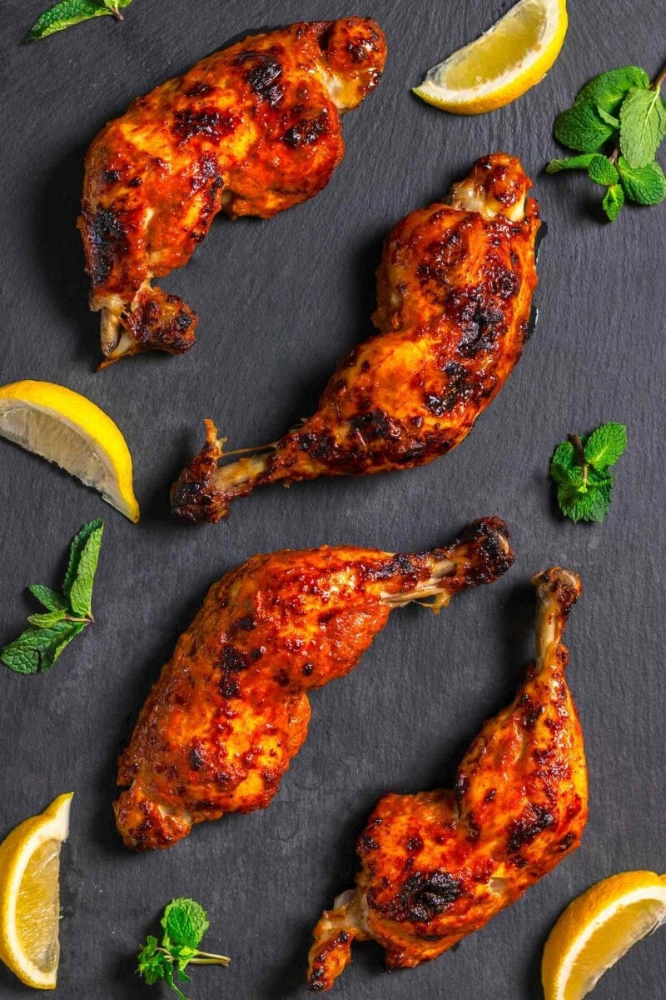
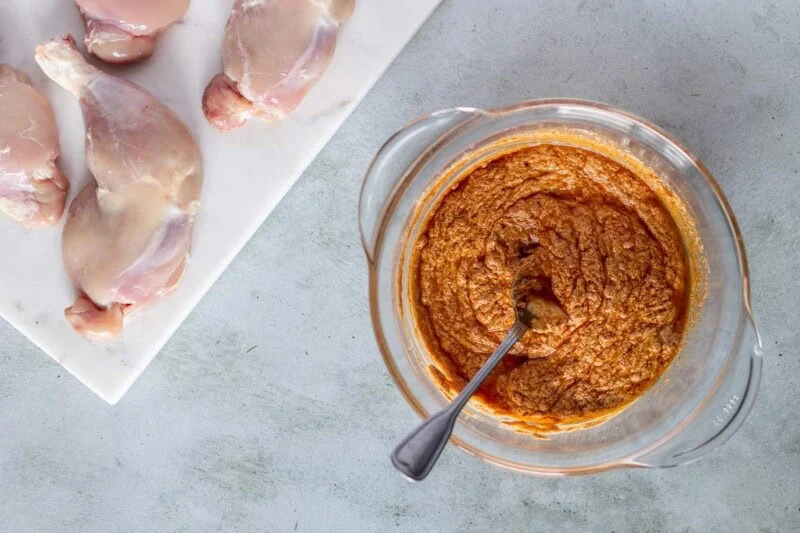
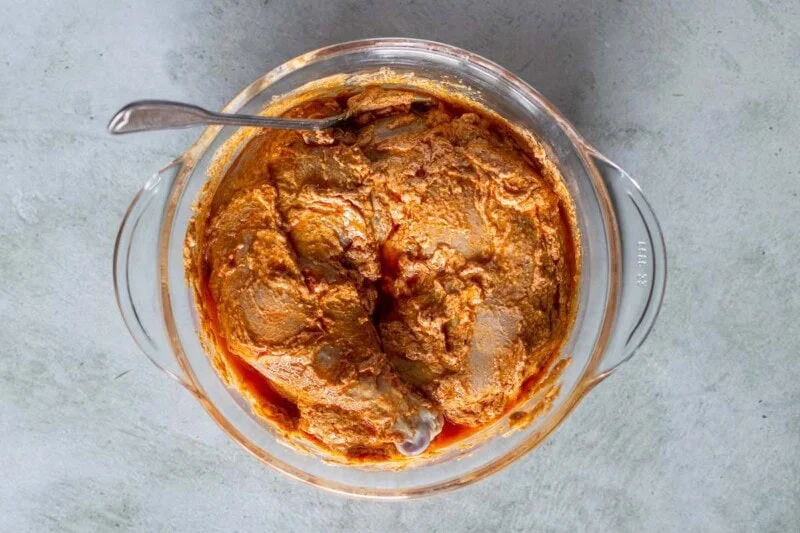
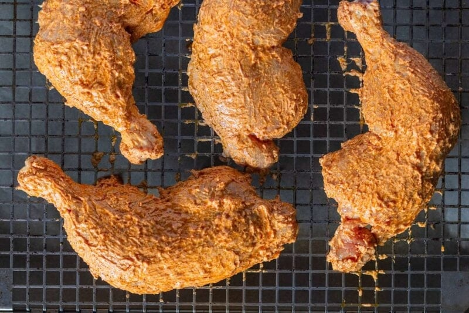
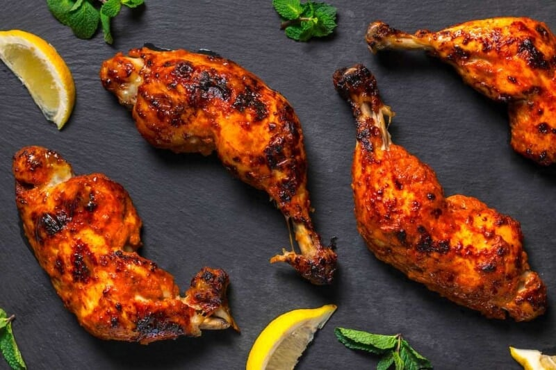

TANDOORI CHICKEN

INGREDIENTS REQUIRED
- I prefer using chicken leg quarters for this recipe because they are fatty, flavorful, and have the bone intact. You can also use a mix of chicken legs and drumsticks. If you want boneless chicken, opt for chicken thighs.
Yogurt.
- Plain Greek yogurt or natural yogurt. Please do not use flavored yogurt.
- Lemon juice. Optional, but if your yogurt is NOT on the tard side, add 1 teaspoon of lemon or lime juice.
- Ginger and garlic. Freshly minced. Fresh ginger and garlic give the chicken Asian notes and add great flavor. Use fewer or more garlic cloves, depending on your preferences.
- Spices. The spice blend I prefer using for my tandoori chicken recipe consists of garam masala, cumin, cinnamon, ground coriander, turmeric, and smoked paprika. While you can customize the spice blend for tandoori chicken, I recommend you never skip the garam masala, as it gives the dish an authentic Indian feel.
- Olive oil. For the marinade. You can use butter or ghee, but I find it firms up a little too much for my liking.
- Salt. To taste.

- Step 1- Prepare the marinade. Add the yog Step 1- Prepare the marinade. Add the yogurt to a mixing bowl. Add the spices, freshly minced ginger and garlic, and olive oil.

- Step 2- Marinate. Pat dry the chicken pieces and put them in the marinade. Mix well to get the chicken completely coated. Let the chicken sit for at least 10 minutes.

- Step 3- Assemble. Remove the chicken from the yogurt mixture and shake off the excess marinade. Place the chicken on the wire rack.

- Step 4- Bake for 25 to 30 minutes or until the chicken is nicely charred and cooked through.
Home